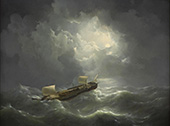

Veruit de bekendste zeeheld van de negentiende eeuw was Michiel de Ruyter. Natuurlijk, De Ruyter was in die tijd al meer dan honderd jaar dood, maar in de beleving van het nageslacht was hij springlevend, als lichtend voorbeeld en als object van nostalgische bewondering. Overal in Europa groeide vanaf het einde van de achttiende eeuw de belangstelling voor de eigen geschiedenis, niet alleen onder een kleine groep van geleerden en intellectuelen, maar in veel bredere lagen van de burgerij. Die ‘historiezucht’, zoals neerlandica Marita Mathijsen het noemt, hangt samen met het opkomende nationalisme en de eerste aanzetten voor een meer democratisch bestuur. Niet alleen de staat en zijn instellingen, maar ook de geschiedenis werd het bezit van iedereen, of althans van bijna iedereen. De maritieme elementen in die eigen geschiedenis kregen in Nederland ruime aandacht. Politici en lokale bestuurders, maar ook dichters, schrijvers en kunstenaars, onderwijzers en huisvaders ontwikkelden in de hier beschreven periode een opmerkelijke belangstelling voor het zeevarende verleden van Nederland. Daarmee hielden zij hun tijdgenoten een spiegel voor van een tijdperk dat zij zagen als heldhaftiger dan hun eigen tijd. Naast de talloze populaire producten om die boodschap breed uit te dragen, zoals dichtwerken, standbeelden, theatervoorstellingen en geschilderde historiestukken, groeide er ook een behoefte om de zeegeschiedenis op wetenschappelijke wijze te bestuderen.1
Mijmeren bij De Ruyters graf
Op een schilderij uit 1832 beeldde de Amsterdamse schilder Hendrik Breukelaar (1809-1839) de ongeveer twaalfjarige Jan Carel Josephus van Speijk (1802-1831) af, staande voor het graf van Michiel de Ruyter in de Nieuwe Kerk in Amsterdam. Volgens een tijdgenoot staart de jongen ‘met zigtbare aandoening op de marmeren beeltenis van de Ruyter, en schijnt door de verhevene gedachte, van eenmaals diens grooten zeeheldspoor te zullen betreden, geheel bezield en als in verrukking opgetogen te zijn’.2 Van Speijk komt hierna nog aan de orde, maar hier gaat het om de directe relatie, in dit geval hoogstwaarschijnlijk achteraf verzonnen, die men zag tussen het heldendom van de Gouden Eeuw en de eigen tijd. Dat nostalgisch en zuchtend terugblikken op het maritieme verleden begon al tientallen jaren voor Breukelaar zijn schilderij vervaardigde. Vooral de niet zo voorspoedig verlopen Vierde Engelse Oorlog (1780-1784) deed menigeen verlangen naar de maritieme successen in de drie voorgaande oorlogen met de erfvijand van de overkant van de Noordzee. Het is veelzeggend dat het vlaggenschip van schout-bij-nacht Johan Arnold Zoutman (1724-1793), de Nederlandse bevelhebber tijdens de Zeeslag bij de Doggersbank in 1781, Admiraal de Ruyter heette. Sommigen, onder wie de dichter Jan Frederik Helmers (1767-1813) schreven het (vermeende) succes in deze zeeslag zelfs voornamelijk toe aan de goddelijke inspiratie door De Ruyter, die ‘de zegepalm aan onze wimpels [deed] hechten’.3

De ‘historiezucht’ nam na de Bataafse Revolutie van 1795 alleen maar toe. Helmers, tegenwoordig vooral bekend van de naar hem genoemde straten, schreef in 1812 een uitgebreid dichtwerk in ‘zes zangen’, De Hollandsche natie.4 Twee daarvan zijn aan de scheepvaart gewijd, de derde, Heldenmoed ter zee, gevolgd door de vierde zang met de eenvoudige titel Zeevaart. De onderwerpen lijken wel de inhoudsopgave van een negentiende-eeuws handboek over zeegeschiedenis, met paragrafen als ‘De zee is het lauwerveld der Hollanders’, en ’s Lands zeevaart uit kleine beginselen groot geworden’. In de vierde zang komen de overzeese heldendaden ter sprake, met onder meer ‘De Nederlandsche Maagd ontvangt de schatting van het Oost en West’. Om een idee te geven van Helmers’ ietwat gezwollen stijl hier enkele regels uit de derde zang, over de familie Evertsen:
‘Wat godlijk heldenvolk! – neen, ’t vrije Griekenland
Zag nooit een’ eedler drom verzameld aan zijn strand.
Hier nadert Evertsen! – verheft u, landgenooten!
Voelt d’adeldom des stams, waaruit gij zijt gesproten!
Hier nadert Evertsen! In ’s Lands vergaderzaal,
Alom omhangen met der Britten wapenpraal,
Spreekt hij: “o! Laat mij de eer, de onschatbare eer verwerven,
Om voor de Vrijheid van mijn Vaderland te sterven”’!5
Het was begrijpelijk dat schrijvers tijdens de Franse overheersing teruggrepen op de ‘goede oude tijd’. Dat deed ook Adriaan Loosjes (1761-1818) in de prozaroman Het leven van Maurits Lijnslager, eene Hollandsche familie-geschiedenis uit de zeventiende eeuw (1808), waarin de gelijknamige hoofdpersoon door Europa en de Republiek reist.6 Onder de vele helden uit betere tijden die hij ontmoet, zijn ook Michiel de Ruyter en Cornelis Tromp. Over de eerste schrijft Loosjes: ‘Lijnslager stond versteld over de gemeenzame vriendelijkheid, die de Ruiter zelfs omtrent gemeenen [eenvoudige mensen] in acht nam’, maar ook over diens ‘adeldom van ziel’.7 Loosjes en Helmers hadden nogal wat last van de censuur bij de publicatie van hun nationalistische werken. De keizerlijke autoriteiten begrepen maar al te goed dat schrijvers en dichters de geschiedenis gebruikten om het heden te bekritiseren.8
Eigentijdse zeehelden
Na het vertrek van de Fransen konden de werken van Helmers en Loosjes opnieuw, en met succes, worden uitgegeven. In het nieuwe, met de zuidelijke provincies verenigde Koninkrijk der Nederlanden ontstond de behoefde om de nationale identiteit te schragen met grote daden ter zee. Kleine militaire acties werden opgeblazen tot mythische proporties, zoals al eerder was gebeurd met de Zeeslag bij de Doggersbank.9 Zo leidde het bombardement van Algiers in 1816 tot uitbundige heldenverering. Deze strafexpeditie door een Brits-Nederlands eskader, ook bekend als de ‘tuchtiging van Algiers’, moest voorgoed een einde maken aan de activiteiten van de Barbarijse zeerovers. Het Nederlandse aandeel was overigens zeer beperkt: vijf betrekkelijk kleine schepen met weinig vuurkracht, naast 21 grote schepen van de Royal Navy.10 Toch werd ‘Algiers’ gevierd als een kranig staaltje, bijvoorbeeld met een Lauwerkroon voor de Nederlandsche zeehelden, bij hunne betoonde moed en dapperheid in den zeeslag voor Algiers den 28sten van oogstmaand 1816, alweer een werk van Adriaan Loosjes. De Nederlandse eskadercommandant, viceadmiraal jhr. Th.F. van de Capellen (1761-1824), heeft zich desondanks geen blijvende plaats verworven onder de vaderlandse zeehelden. Een zelfde korte golf van enthousiasme ontstond na de verovering van Palembang op Sumatra, zeven jaar later. Deze amfibische actie was gericht tegen de plaatselijke sultan die niet inzag dat hij het Nederlandse gezag diende te erkennen. In Nederland verscheen onmiddellijk een Zegezang ter eere der Nederlandsche helden op Palembang (1821), maar ook die helden waren snel vergeten.11


De behoefte aan eigentijdse maritieme helden leek meer te worden bevredigd door een voorval in 1831: de zogenaamde zelfopoffering van Jan van Speijk, die op 5 februari van dat jaar zijn kanonneerboot Nr. 2 liever met bemanning incluis liet ontploffen dan het vaartuig en de Nederlandse vlag in handen van de oproerige Belgen te laten vallen. Van Speijks daad had alles in zich om uitbundig gevierd en herdacht te worden: dichter bij huis dan Algiers en Palembang, en een troostende gebeurtenis op een moment dat het toch al zo kleine Nederland bezig was de helft van zijn grondgebied voorgoed te verliezen. De euforie was groot, een lawine van eerbewijzen volgde direct na de knal op de Schelde: gedichten en liederen, waaronder een declamatorium ‘De heldendood van J.C.J. van Speyk’12, penningen en sculpturen, prenten en schilderijen, en, later in de negentiende eeuw, straatnamen in tal van steden. Al zes dagen na de dood van Van Speijk, nog voor de staatsbegrafenis in Amsterdam van de bijeengeraapte stoffelijke resten van de jonge officier, had koning Willem I zijn befaamde Koninklijk Besluit genomen. Dat hield in dat er ‘voortaan bij de Nederlandsche Zeemagt altijd een der schepen of vaartuigen van oorlog den naam zal voeren van Van Speijk’.13 Tot op heden is dat ietwat overhaaste decreet van kracht gebleven. Een monument kwam er ook. Behalve de tombe in de Nieuwe Kerk in Amsterdam, niet ver van het graf van Van Speijks idool Michiel de Ruyter, kwam er een stenen herinnering die letterlijk een lichtend voorbeeld moest zijn voor zeevarenden: de monumentale vuurtoren in Egmond aan Zee, gereedgekomen in 1834. De kosten werden bestreden uit de verkoop van de brokstukken van de kanonneerboot Nr. 2. De euforie rond Van Speijk was enorm, maar zwakte ook snel af. Na 1835 werden er vrijwel geen schilderijen meer gewijd aan zijn heldendaad.14 Alleen de Koninklijke Marine zette de Van Speijk-cultus consequent voort. Het Koninklijk Instituut voor de Marine (KIM) in Den Helder ontving het ene aandenken na het andere, zoals schilderijen en relikwieën, waaronder fragmenten van de ontplofte kanonneerboot. Opmerkelijk is ook het Adelborstenlied uit 1887 waarin, naast verwijzingen naar De Ruyter en Tromp ook deze regels voorkomen: ‘’t Voorbeeld door Van Speijk gegeven / Volgen wij met hart en hand’.
Het lied wordt nog altijd gezongen door aankomende marineofficieren op het KIM. Of deze belofte nog helemaal past bij de hedendaagse krijgsmacht, wordt in de eenentwintigste eeuw sterk betwijfeld.15 In de meest recente biografie is de auteur van mening dat men Van Speijk niet langer als held zou moeten gedenken, maar als ‘historische persoonlijkheid die het een en ander op zijn kerfstok heeft’.16
Zeeheldencultus
De Belgische Opstand confronteerde de Nederlandse samenleving opnieuw met haar zwakke punten, reden te meer om weer terug te grijpen op een heldhaftiger verleden. Op den duur boden de beproefde helden uit de zeventiende eeuw toch meer troost in bange dagen. Het is geen toeval dat juist in deze tijd, in 1841, een standbeeld van Michiel de Ruyter werd opgericht, niet alleen het eerste eerbetoon voor een zeeheld in deze vorm, maar ook een van de eerste standbeelden aan de openbare weg in Nederland. Alleen Erasmus en Laurens Jansz Coster waren al eerder op deze manier geëerd. De grote humanist was in brons gegoten, het beeld van De Ruyter door Louis Royer (1793-1868) moest het in Vlissingen met gietijzer doen: de openbare inzameling voor het beeld had daarvoor net genoeg opgebracht. Naast monumenten voor andere historische figuren als Vondel en Willem van Oranje, verrezen er in de loop van de eeuw nog meer maritieme heldenbeelden: Piet Hein (Delfshaven, 1873) en zelfs twee van Jan Pieterszoon Coen, het eerste in Batavia, in de jaren zeventig van de negentiende eeuw geplaatst en vervolgens nog één in Coens geboorteplaats Hoorn (1893).17
Dat De Ruyter de eerste zeeheld op een sokkel was, lag voor de hand. Hij verenigde alles wat Nederland nodig had in die jaren: gestorven in het harnas voor het vaderland, een vroom christen en ook nog van eenvoudige komaf, ideaal om je mee te identificeren dus. Wat Nederland vooral zo in hem aantrok was zijn vaderlijke imago. Huiselijke helden passen bij de Nederlandse identiteit, heel anders dan de ‘strong, masculine heroes’ die Thomas Carlyle in zijn beroemde lezingenserie over Hero-Worship and the Heroic in History (1841) zag als de beslissende krachten in het historische proces.18 In ons land had men volgens Herman Pleij liever een ‘bijbellezende huisvader’, en zo werd De Ruyter ook afgebeeld.19 Die paste toch beter bij de Nederlandse identiteit dan een onbezonnen jongeman, als Van Speijk die 25 medeopvarenden de dood had ingejaagd, alleen om de eer van de vlag te redden.
Tsaar en timmerman
Die sentimentele voorkeur voor huiselijkheid is ook te bespeuren in andere culturele uitingen die refereren aan de maritieme geschiedenis, zoals het populaire dichtwerk De overwintering der Hollanders op Nova Zembla (1820) door Hendrik Tollens (1780-1856). Het is een uitgebreid verslag – meer dan zevenhonderd dichtregels – van de laatste reis van Jacob van Heemskerck en Willem Barentsz naar het Hoge Noorden, op zoek naar een route naar Azië.20 Zelfs de ontberingen in het ‘Behouden Huys’ krijgen bij Tollens iets knus:

‘Zoo wordt hun nood gerekt en ’t harde brood gegeten.
Maar de eensgezindheid blijft, al dringt zich de armoê in;
Een onbevolen tucht regeert het gansch gezin,
En zuinigheid houdt huis, naar Hollands oude zeden:
Geen kruimel wordt verspild, geen spaander wordt vertreden’.
Een vergelijkbaar huiselijk element is te vinden in het enthousiasme voor tsaar Peter de Grote, die tijdens zijn bezoek aan ons land in 1697 als een eenvoudige scheepstimmerman meewerkte op de Amsterdamse VOC-werf. De woning in Zaandam waar hij enige dagen doorbracht, werd kort voor het jaar 1800 nog net op tijd gered van de sloop en later gekoesterd als een heiligdom. Dat de Oranjes verwant waren aan de Romanov-familie heeft bijgedragen aan het behoud van het Tsaar Peterhuisje. Anna Paulowna, echtgenote van de latere koning Willem II betaalde in 1823 de eerste overkapping van het bouwvallige houten huisje, nadien vervangen door een bakstenen omhulsel, ditmaal op kosten van tsaar Alexander III (1893). De cultus rond de Peter de Grote ging gepaard met de gebruikelijke elementen, zoals volksprenten voor de jeugd en uiteindelijk zelfs, in 1911, een standbeeld in Zaandam. Het verhaal van de timmerende tsaar vond niet alleen in Nederland en Rusland, maar ook elders in Europa weerklank. Zo verwerkte de Duitse componist Albert Lortzing (1801-1851) deze geschiedenis tot de komische opera Zar und Zimmermann (1837), die ook in Nederland volle zalen trok.21 Dat een Russische tsaar en de Zeeuwse zeeheld Michiel de Ruyter zo populair waren lijkt geen verband met elkaar te hebben, afgezien van de maritieme context. Wat hen mogelijk wel verbindt is hun ‘gewoonheid’: de ene was een eenvoudig lijnbaansknechtje dat het schopte tot de hoogste positie bij de zeemacht, de ander een machtige potentaat die niet te beroerd was om op een scheepswerf samen te werken met gewone ambachtslieden, die hem bij zijn voornaam aanspraken.

Het theater bood een aantrekkelijke gelegenheid om moraliserend terug te blikken op de geschiedenis. De Amsterdamse schouwburg bracht in de hele negentiende eeuw tal van voorstellingen die handelden over vaderlandse helden, waaronder ook zeehelden. Tot ver in de eeuw bracht men hier stukken van Johannes Nomsz (1739-1803), een toneelschrijver die in zijn jeugd nog zeeman was geweest.22 Zijn drama over Michiel de Ruyter uit 1780 werd nog lang na zijn dood met succes op de planken gebracht, vooral in de jaren dertig, kort na de Belgische Opstand. Andere maritieme figuren en overzeese gebeurtenissen die hij omwerkte tot toneelstukken zijn de Slag bij de Doggersbank en de geschiedenis van dominee Hambroek, die in 1663 werd geëxecuteerd bij de ondergang van de VOC-vestiging op Formosa.23 Vooral dat laatste drama werd nog jarenlang gespeeld, net als andere voorstellingen over De Ruyter en over Piet Hein.24 Zulke stukken werden in de Amsterdamse schouwburg in de jaren na 1831 vaak gecombineerd met een opvoering van een Hulde, aan de nagedachtenis van Hollandsch zeeheld J.C.J. van Speijk, een bombastisch zangspel op tekst van Jacob van Lennep (1801-1868), met versregels als:
‘Naauw ziet het Brabants graauw de aan wal geslagen kiel;
Of ’t jubelt om de prijs die in zijn handen viel.
In steê van hulp te biên begeert het buit te rapen
En klautert reeds op ’t dek met oorlogstromp en wapen.
“Geeft, geeft uw bodem op. Omlaag gesjord die vlag!”’
Geschilderde maritieme historie
Van alle kunstvormen die in de negentiende eeuw werden beoefend is de schilderkunst misschien wel het meest doortrokken van scheepvaart en de zee. Er zijn twee vormen van maritieme schilderkunst te onderscheiden. Allereerst de werken van historieschilders, kunstenaars die de maritieme gebeurtenissen uit de lokale en vaderlandse geschiedenis vastlegden. Daarnaast waren er schilders, die schepen, zee- en riviergezichten vastlegden, zonder directe verwijzing naar het roemrijke verleden. De eerste categorie was goed vertegenwoordigd in de Historische Galerij, die van 1862 tot 1889 te zien was in de expositiezalen van de kunstenaarssociëteit Arti et Amicitiae in Amsterdam. Dit overzicht van de vaderlandse geschiedenis telde 102 schilderijen.25 Ongeveer een kwart daarvan had een maritiem of aanverwant thema, als we dat begrip ruim opvatten. De catalogus vermeldt bijvoorbeeld ‘Het oprichten van een stenen Baken op de Zeeuwsche duinen, 1351’ (Johannes Hilverdink (1813-1902)), maar ook ‘Peter de Grote, afgebeeld als scheepstimmerman op de VOC-werf in Amsterdam’, door Johannes Bosboom (1817-1891). De gebruikelijke zeehelden, Piet Hein, Maerten Tromp en Michiel de Ruyter waren eveneens vertegenwoordigd. Origineel is het tafereel van ‘Heemskerck en Barentsz, hun tweede togt naar het hoge Noorden voorbereidende’. Op dit fictieve interieurstuk door Christoffel Bisschop (1828-1904) zijn de twee zeevaarders te zien voor hun vertrek naar Nova Zembla, te midden van kaarten, gidsen, een scheepsmodel en een globe.26
Naast deze historische voorstellingen was er een enorme productie van zeestukken die waren gebaseerd op de scheepvaart van de eigen tijd. Al aan het einde van de achttiende eeuw herleefde de maritieme schilderkunst die een eeuw eerder zo’n bloei had gekend. Ten tijde van de Vierde Engelse Oorlog (1780-1784) en daarna bracht Engel Hoogerheyden (1740-1807) bijvoorbeeld de activiteit van de oorlogsvloot in Zeeland in beeld.27 Gerrit Groenewegen (1754-1826) liet zich bij het maken van tekeningen en etsen inspireren door de drukke scheepvaart rond zijn woonplaats Rotterdam. Veel kunstenaars zagen weer brood in het vervaardigen van ‘marines’, zoals Johannes Hermanus Koekkoek (1778-1851), de stamvader van een groot aantal gelijknamige romantische schilders.

Romantische kunstenaars lieten zich inspireren door de overweldigende kracht en schoonheid van de zee, met taferelen waarin de mens vaak een speelbal van de elementen is. Heel duidelijk is dat bij de Dordtse zeeschilder Johannes Cornelis Schotel (1787-1838). Bij hem waren gebeurtenissen uit de Gouden Eeuw niet het onderwerp voor schilderijen, zoals bij de echte historieschilders. Wel is zijn bewondering voor de zeeschilders uit die periode, Willem van de Velde de Jonge (1633-1707) en Ludolf Backhuysen (1630-1708), af te lezen in zijn stijl en onderwerpskeuze.28
De waardering voor de zeeschilderkunst leidde zelfs tot een voor Nederland unieke vorm van officiële erkenning. In de jaren dertig en veertig van de negentiende eeuw voerde Prins Hendrik van Oranje-Nassau (1820-1879) het bevel over een marine-eskader dat elk jaar enige maanden oefende in de Middellandse Zee. Op deze reizen nodigde deze Nederlandse ‘Hendrik de Zeevaarder’ jonge kunstenaars uit om aan boord inspiratie op te doen voor schilderijen, onder wie Petrus Johannes Schotel (1808-1865), zoon van J.C. Schotel, Albertus van Beest (1820-1880) en Louis Meijer (1809-1866). Het resultaat was een aantal spectaculaire doeken met de schepen van het eskader, waaronder Hendriks vlaggenschip Rijn.
De hernieuwde waardering voor de maritieme schilderkunst in de negentiende eeuw heeft tot duizenden werken door grote en kleine meesters geleid met titels als ‘binnenwater met tjalken’, ‘woelende (of kalme) zee’, en ontelbare strand- en riviergezichten, schipbreuken, overzetveren en pittoreske vissersfamilies.29 Sommige van die zee- en rivierschilders genoten in hun tijd grote bekendheid of behoorden zelfs tot de avant-garde van de kunst. Jozef Israels (1824-1911), geen zeeschilder pur sang, werd ook buiten Nederland geprezen om zijn verhalende, nogal sentimentele werken over het harde leven van de vissers aan de Noordzeekust. Zijn collega Hendrik Willem Mesdag (1831-1915), een vertegenwoordiger van de Haagse School, was wel een echte specialist, tot in het extreme: zijn oeuvre bestaat vrijwel uitsluitend uit schilderijen van bomschuiten op of bij het strand van Scheveningen.


Men zou verwachten dat al die schilderijen uit de negentiende eeuw een redelijk adequaat beeld geven van de Nederlandse scheepvaartgeschiedenis. Dat is maar gedeeltelijk het geval. Verreweg de meeste kunstenaars kozen onderwerpen waarin de eigen tijd slechts een ondergeschikte rol speelde. Liever vulden zij hun doeken met een nostalgisch aandoende zeilende tjalk op een met bomen gestoffeerd binnenwatertje dan met een raderstoomschip op een modern kanaal. Zelfs Mesdag, die ons zo’n indringend en correct beeld voorschotelt van de bommen en de vissers op het strand filterde in zijn laatste jaren als het ware zijn eigen tijd weg. Terwijl de logger de ouderwetse bom al had vervangen en de nieuwe Scheveningse haven vanaf 1904 het centrum van de plaatselijke visserij was geworden, bleef hij bommen in de branding schilderen, ook al lagen er geen bomschuiten meer op het strand. In dat opzicht was ook hij, net als zo vele vakgenoten een soort historieschilder geworden.
Zeereizen bij de haard
Sinds de tijd van de ontdekkingsreizen waren verhalen over zeereizen en zeehelden populair. Het Journaal van Bontekoe uit 1641 beleefde tot in de twintigste eeuw herdruk na herdruk. Ook jonge lezers zullen er van hebben genoten, maar speciaal voor de jeugd geschreven maritieme verhalen waren er tot aan het einde van de achttiende eeuw nog niet.30 De oudste jeugdliteratuur op dit terrein weerspiegelt de idealen van de Verlichting: een vertelling moest vooral bijdragen aan verspreiding van kennis en de hoofdpersonen dienden als voorbeeld voor de lezertjes. Gerrit Engelbert Gerrits (1795-1880) deed dat bijvoorbeeld in dialoogvorm, tussen een vader en zijn brave zoontjes Koenraad en Hendrik, over de ‘doorluchtige zeehelden’ Piet Hein en Jacob van Heemskerck.31 Later in de negentiende eeuw bleef de maritieme jeugdliteratuur nog altijd moraliserend en vaderlandslievend, maar spanning en avontuur werden de hoofdbestanddelen. Een pionier op dit terrein was Pieter Louwerse (1840-1908), schrijver van onder meer Mannen van Stavast over de tijd van Jan Pietersz Coen. Johan Hendrik van Balen (1851-1921) had een vergelijkbaar oeuvre, met veelzeggende titels als De scheepsjongen van Willem Barendsz uit 1882. Die titel duidt ook op een nieuwe verteltechniek: niet de held zelf was de hoofdpersoon, maar iemand uit zijn omgeving, meestal een scheepsjongen. Dat bood niet alleen meer vrijheid aan de fantasie van auteur, maar vergrootte voor de lezer ook de mogelijkheid om zich te identificeren met een leeftijdgenoot.32 Dit recept pasten ook latere auteurs in dit genre toe, zoals Joh. C. Been met Paddeltje, de scheepsjongen van Michiel de Ruyter (1908) en Johan Fabricius (De scheepsjongens van Bontekoe (1924)).33 Meer dan hun negentiende-eeuwse voorgangers bleven deze auteurs tot in de eenentwintigste eeuw populair bij een jong publiek.
Geschiedenis van het zeewezen
De hang naar het maritieme verleden had ook een wetenschappelijke kant. De negentiende eeuw was de periode waarin de wetenschappelijke geschiedbeoefening tot ontwikkeling kwam, met zorgvuldig controleerbaar bronnenonderzoek als uitgangspunt. Het was de rijksarchivaris Johannes Cornelis de Jonge (1793-1853) die als eerste de zeegeschiedenis op deze manier aan een uitgebreid onderzoek onderwierp, wat meteen tot een kloek overzichtswerk heeft geleid. Zijn Geschiedenis van het Nederlandsche zeewezen verscheen tussen 1833 en 1848 in zes delen.34 Onder dat ‘zeewezen’ verstond De Jonge uitsluitend de marine, die hij beschrijft vanaf de middeleeuwen tot 1810. Zijn werk is uiterst gedetailleerd en daardoor van blijvende waarde, mede omdat hij vele bronnen kon raadplegen die niet meer bestaan. Bij de brand die op 8 januari 1844 woedde in het ministerie van Marine in Den Haag, gingen namelijk grote delen van de admiraliteitsarchieven verloren.
14_PortretbusteKl._B_2667.jpg
De Jonge had, blijkens het voorwoord van zijn zoon bij de tweede druk van 1858, het vaste voornemen om zich niet ‘door deze of gene staatspartij te laten medeslepen, of blindelings het ééne of het andere stelsel in bescherming te nemen. Eén spoor volgde hij: het was het spoor der waarheid; daarvan liet hij zich door geene dwaallichten afleiden’.35 Toch ontkwam De Jonge niet aan een zekere nationalistische vooringenomenheid. In de eigen voorrede bij de eerste editie verklaart hij bijvoorbeeld dat de Nederlandse natie ‘hare vrijheid, haren roem, haren luister, hare welvaart, ja zelfs haar aanzijn aan dat zeewezen grootendeels heeft te danken’.
De Jonges werk markeert de toenemende aandacht voor een serieuze benadering van de maritieme geschiedenis. J.J. Backer Dirks (1825-1893), docent aan het Koninklijk Instituut voor de Marine, volgde zijn voorbeeld met een vrije bewerking van en aanvulling op het werk van De Jonge.36 Ook de opkomst van periodieken over de zeevaart, zoals de Verhandelingen en berigten betrekkelijk het zeewezen (vanaf 1840)37 en de oprichting van het eerste scheepvaartmuseum van Nederland, het Maritiem Museum ‘Prins Hendrik’ in Rotterdam (1874), zijn tekenen van de bredere, wetenschappelijk gefundeerde belangstelling voor het ‘zeewezen’ in de loop van de negentiende eeuw.
Historiezucht was ook een van de drijfveren voor de organisatoren van de Nederlandse wetenschappelijke expedities naar de noordelijke poolstreken, in de jaren 1878-1884. Aanleiding voor de zeven reizen die het Hoofdcomité voor de IJszeevaart organiseerde met de schoener Willem Barents, was de vondst van restanten van het ‘Behouden Huys’ op Nova Zembla. Dat de ontdekker een Noor was, de walrusjager Elling Carlsen, deed in Nederland een golf van nationaal bewustzijn ontwaken: Nederland moest weer een rol gaan spelen in het wetenschappelijk onderzoek van de poolstreken! Een van de initiatiefnemers voor de tochten was Jan Karel Jacob de Jonge (1828-1880), zoon van de hiervoor genoemde historicus J.C. de Jonge, adjunct- rijksarchivaris en later directeur van het Mauritshuis. Op plaatsen waar Nederlanders in het verleden actief waren geweest, zoals Nova Zembla en Spitsbergen moest de bemanning van de poolschoener gedenkstenen plaatsen. Van meer praktisch belang was echter het wetenschappelijk onderzoek door onderzoekers aan boord, met specialismen als geografie, oceanografie, meteorologie en zoölogie.38 Naast wetenschappelijke informatie hebben de reizen belangwekkend beeldmateriaal opgeleverd door de aanwezigheid van een fotograaf, de Engelsman William Grant (1851-1935) en, tijdens de reis van 1880, een beeldend kunstenaar, Louis Apol (1850-1936). Apol stond bekend om zijn wintergezichten, en kon nu, in de arctische zomer, vergelijkbare sneeuw- en ijslandschappen vastleggen. De foto’s van Grant en Apols tekeningen kregen grote bekendheid, onder meer door reproducties in populaire bladen als Eigen Haard.39 Apol schilderde ook een doek voor het Panoramagebouw in Amsterdam met een 360° gezicht op Nova Zembla, dat vanaf 1896 voor het publiek te zien was.40


Conclusie
Vaderlandse geschiedenis in al zijn facetten was gedurende de hele negentiende eeuw een soort nationale rage. Zelfs toen het land in de loop van de eeuw steeds moderner en welvarender werd bleef de blik gericht op de achteruitkijkspiegel. In die ‘historiezucht’ hadden scheepvaart en maritiem heldendom een prominente plaats. Opvallend is daarbij dat men telkens teruggreep op een beperkt aantal vaderlandse helden, Michiel de Ruyter voorop. Ook de roem van een eigentijdse held, J.C.J. van Speijk, werd meteen in een historische context geplaatst, opnieuw met De Ruyter als referentiepunt. De zeeheldencultus had een functie in het creëren en versterken van het nationale zelfbewustzijn. Nog tot ver na de negentiende eeuw bleven die zeehelden deel uitmaken van de informele canon waarvan het onderwijs en de jeugdliteratuur zich bediende. Liedjes over De Ruyter en Piet Hein, waaronder het bekende Zilvervloot-lied door Jan Pieter Heije (1809-1876) en kinderboeken over hun dapperheid bleven ook in de twintigste eeuw populair.41 Kritiek op die in hedendaagse ogen overdreven heldenverering was er maar weinig. Slechts een enkele tijdgenoot durfde het bijvoorbeeld aan om de zelfmoord van Van Speijk te kwalificeren als een daad die strijdig was met het christendom.42 Dat Multatuli (1820-1887) weinig op had met maritiem heldendom zal niemand verbazen. Dat blijkt wel uit een gedicht op Michiel de Ruyter, dat Leentje de Haas, een klasgenootje van Woutertje Pieterse in de gelijknamige roman, inlevert bij Meester Pennewip. In zes coupletten vatte zij hierin het leven van de zeeheld bondig samen, waaronder deze drie:

‘Hy is op een toren geklommen,
En heeft daar touw gedraaid,
Toen is hy op zee gekommen,
En werd met roem bezaaid.
Hij wou ’t er bij laten,
En heeft Saleh geveld.
Toen hebben de heren Staten
Hem aangesteld als held.
[…]
Hy gaf de eer den Here,
En was als Christen groot.
Toen kreeg hy door zyn kleren
Een kogel, en was dood’.43
Ook een manier om een held te gedenken!
Rijksmuseum, Amsterdam.
Rijksmuseum, Amsterdam.